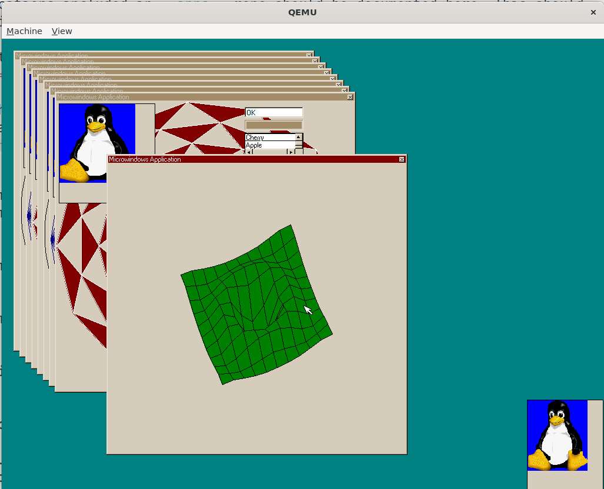
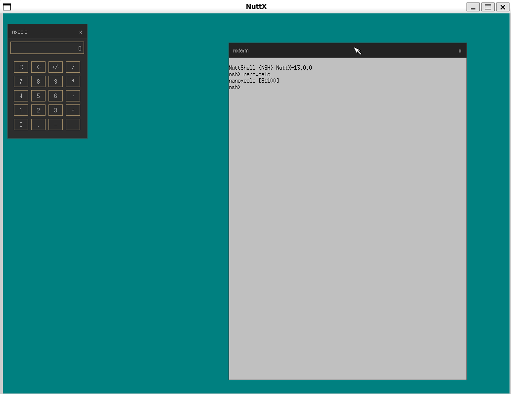

Microwindows
Microwindows is a lightweight windowing system for small- to medium-footprint embedded systems. It provides:
GDI / Win32 API – a low-level C graphics library for direct framebuffer drawing, suitable for tiny single-threaded applications.
mwin – a widget toolkit built on the Win32 API, supporting windows, menus, buttons, edit boxes, list boxes, scroll bars, progress bars, and timers.
Nano-X / X11 API – an X11-compatible client/server window system, enabled with
CONFIG_MICROWINDOWS_NANOX.
The NuttX integration includes the Microwindows core and GDI API. The
optional mwin widget toolkit provides a Win32-style API and is enabled with
CONFIG_MICROWINDOWS_MWIN=y. The Nano-X client library and server can
also be built, giving access to the X11-style GrXXX API from multiple
client applications.
Quick Start
Microwindows requires a framebuffer device (CONFIG_VIDEO_FB=y).
The build and run instructions for the supported configurations are documented on their board pages:
NuttX Simulation (SIM) (
sim:mwandsim:nanox)QEMU Intel64 (
qemu-intel64:mwandqemu-intel64:nanox)
Nano-X (X11 API)
For the Nano-X client/server window system, the sim:nanox configuration
boots directly into the nxterm terminal emulator:
cd nuttx
tools/configure.sh sim:nanox
make -j$(nproc)
This opens an X11-style terminal window running an NSH shell; typing
nanoxcalc inside it starts the calculator demo.
For QEMU, use the qemu-intel64:nanox configuration instead:
cd nuttx
tools/configure.sh qemu-intel64:nanox
make -j$(nproc)
See QEMU Intel64 for the QEMU ISO creation and run instructions.
Available Configurations
To enable Microwindows, set CONFIG_GRAPHICS_MICROWINDOWS=y.
The library is located at apps/graphics/microwindows.
Dependencies
All configurations require CONFIG_VIDEO_FB=y.
For qemu-intel64:mw and qemu-intel64:nanox, the following input-related options are required:
CONFIG_USBHOST=y,CONFIG_USBHOST_HIDKBD=y,CONFIG_USBHOST_HIDMOUSE=y,CONFIG_USBHOST_XHCI_PCI=y,CONFIG_USBHOST_WAITER=y,CONFIG_MICROWINDOWS_KBD_EVENT=y,CONFIG_MICROWINDOWS_KBD_EVENT_PATH="/dev/kbda"
The USB HID keyboard exposes keyboard_event_s records at /dev/kbda;
it is not the raw byte-stream keyboard driver.
For sim:mw and sim:nanox the following input options are required:
CONFIG_INPUT=y,CONFIG_SIM_KEYBOARD=y,CONFIG_SIM_TOUCHSCREEN=y
Keyboard Drivers
choice prompt: "Keyboard driver"
MICROWINDOWS_KBD_EVENTReads
keyboard_event_sevents from/dev/kbd(path configurable). Supports key press/release tracking and modifier keys (Shift, Ctrl, Alt).Device path config:
MICROWINDOWS_KBD_EVENT_PATH(default/dev/kbd).MICROWINDOWS_KBD_RAWReads raw byte stream from
/dev/kbda(path configurable). Decodes escape sequences via thekbd_codeclibrary. RequiresLIBC_KBDCODEC=y. Suitable for USB HID keyboards.Device path config:
MICROWINDOWS_KBD_RAW_PATH(default/dev/kbda).MICROWINDOWS_KBD_NONENo keyboard driver is compiled. Microwindows uses a null driver that never produces input. Suitable for display-only applications.
MICROWINDOWS_KBD_CUSTOMNo built-in keyboard driver is compiled. The application or BSP must provide its own
kbddevsymbol andKBDDEVICEimplementation, and add the source file to the build (e.g. viaCSRCSin its Makefile).
Mouse / Touchscreen Drivers
choice prompt: "Mouse/touchscreen driver"
MICROWINDOWS_MOUSE_RELATIVEReads
mouse_report_sevents from/dev/mouse0(path configurable). Supports three buttons and scroll wheel.Device path config:
MICROWINDOWS_MOUSE_PATH(default/dev/mouse0).MICROWINDOWS_MOUSE_TSReads
touch_sample_sevents from/dev/input0(path configurable). Supports absolute positioning.Device path config:
MICROWINDOWS_TS_PATH(default/dev/input0).MICROWINDOWS_MOUSE_NONENo pointing device driver is compiled. Microwindows uses a null driver that hides the cursor and produces no input.
MICROWINDOWS_MOUSE_CUSTOMNo built-in pointing device driver is compiled. The application or BSP must provide its own
mousedevsymbol andMOUSEDEVICEimplementation, and add the source file to the build.
Framebuffer
MICROWINDOWS_FB_PATHPath to the NuttX framebuffer device. Default
/dev/fb0.
Nano-X Client/Server Support
Enable the Nano-X (X11 API) client/server window system with
CONFIG_MICROWINDOWS_NANOX=y. It builds the Nano-X server core and the
Nano-X client library from the bundled Microwindows tree.
MICROWINDOWS_NANOXBuild the Nano-X server core and client library. Applications can start the server as a separate task; client applications connect to it through a local stream socket and use the X11-like API (
GrXXXcalls). In this network mode, it requiresCONFIG_NET=y,CONFIG_NET_LOCAL=yandCONFIG_NET_LOCAL_STREAM=y. The NuttX build enablesNX_PER_CLIENT_DATAand stores each client’s state in POSIX thread-local storage, so several client tasks can run at the same time in a flat build.MICROWINDOWS_NANOX_NONETWORKBuild the Nano-X client library and server in the linked-in (
NONETWORK) mode: client applications are linked directly with the server and run in the same task, so no network stack or socket is required and the memory footprint is minimal. Only a single client application can be active at a time.MICROWINDOWS_NANOX_NANOWMLink the built-in window manager (
wm*.c,nxdraw.c) into the Nano-X server, providing window decorations (title bar, 3D frame), cascaded placement, move/resize and focus handling.
Microwindows Demo Application
Enable with CONFIG_EXAMPLES_MICROWINDOWS=y. The example is located at
apps/examples/microwindows.
It ports mwdemo.c from upstream, which exercises the mwin widget toolkit
(buttons, edit boxes, list boxes, scroll bars, progress bars). The demo uses
GdOpenScreen() to initialise the framebuffer and enters a Win32-style
message loop with GetMessage() / DispatchMessage().

The mwdemo application running on the NuttX simulator (sim:mw).
EXAMPLES_MICROWINDOWS_PROGNAMEProgram name for the NSH ELF install (default
"mwexample").EXAMPLES_MICROWINDOWS_PRIORITYTask priority (default
100). For setups where input threads have a lower priority, consider lowering this value.Warning
On
qemu-intel64:mwthe default USB HID mouse thread priority (CONFIG_HIDMOUSE_DEFPRIO, default 50) is lower than the demo application priority (100). When dragging a window, Microwindows’MwSelectswitches to polling (selectwith timeout 0), which can starve the USB input thread and make the whole system appear frozen. RaiseCONFIG_HIDMOUSE_DEFPRIO(e.g. to 120), lowerEXAMPLES_MICROWINDOWS_PRIORITY, or fix the drag loop to use a small non-zero timeout.EXAMPLES_MICROWINDOWS_STACKSIZEStack size in bytes (default
32768).
Nano-X Terminal Emulator Example
Enable with CONFIG_EXAMPLES_NANOXTERM=y. The example is located at
apps/examples/nanoxterm.
It is a port of the nxterm demo from upstream Microwindows. It starts
the Nano-X server as a separate task, connects to it and creates a terminal
window backed by a pseudo terminal. The configured NSH program is started
with posix_spawn(). Requires CONFIG_PSEUDOTERM=y,
CONFIG_LIBC_EXECFUNCS=y and CONFIG_SYSTEM_NSH=y.
It can be used as the init entry point: setting
CONFIG_INIT_ENTRYPOINT="nanoxterm_main" boots directly into the
terminal window, e.g. the sim:nanox configuration.

The nxterm terminal emulator running on the NuttX simulator (sim:nanox),
with an NSH shell.
In the NONETWORK mode (MICROWINDOWS_NANOX_NONETWORK) the server task
is not started, since the application runs the server inside main().
EXAMPLES_NANOXTERM_PROGNAMEProgram name for the NSH ELF install (default
"nanoxterm").EXAMPLES_NANOXTERM_PRIORITYTask priority (default
100).EXAMPLES_NANOXTERM_STACKSIZEStack size in bytes (default
16384).
Nano-X Calculator Example
Enable with CONFIG_EXAMPLES_NANOXCALC=y. The example is located at
apps/examples/nanoxcalc.
It is a port of the nxcalc demo from upstream Microwindows. It connects
to the running Nano-X server and shows a calculator keypad operated by the
mouse or keyboard. Requires CONFIG_LIBC_FLOATINGPOINT=y. To invoke it
as an NSH command, also enable CONFIG_NSH_BUILTIN_APPS=y; both Nano-X
defconfigs enable this option.
EXAMPLES_NANOXCALC_PROGNAMEProgram name for the NSH ELF install (default
"nanoxcalc").EXAMPLES_NANOXCALC_PRIORITYTask priority (default
100).EXAMPLES_NANOXCALC_STACKSIZEStack size in bytes (default
16384).
Porting to New Hardware
The Microwindows source is downloaded at build time from the upstream
repository. NuttX-specific screen, keyboard, and mouse drivers live
in upstream src/drivers/ (scr_nuttx.c, kbd_nuttx_event.c,
kbd_nuttx_raw.c, mou_nuttx_mouse.c, mou_nuttx_ts.c).
A board with a working framebuffer and input devices needs:
A
defconfigenablingCONFIG_VIDEO_FB,GRAPHICS_MICROWINDOWS, and the appropriate keyboard/mouse driver choice.For framebuffer-only (display-only) use, select
KBD_NONEandMOUSE_NONE.
If the board’s input hardware does not fit the built-in drivers, select
KBD_CUSTOM and/or MOUSE_CUSTOM and provide your own driver source.